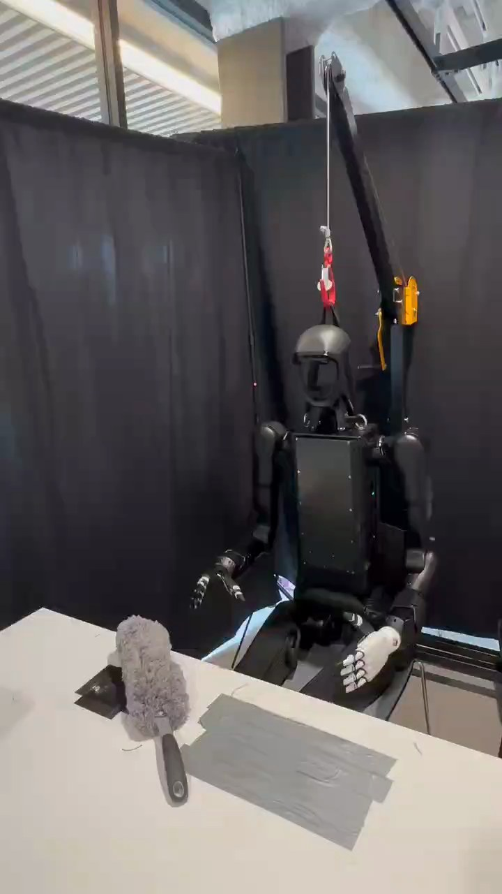

Humanoid Everyday · human-robot-3__hand_over_grey_duster
Hand over grey duster

Visual review action_review.json
{
"prompt_protocol": "humanoid_action_v1",
"prompt_provenance": "visually_authored_from_video_and_initial_frame",
"reviewed_contact_sheets": [
"sheet_001.jpg",
"sheet_002.jpg",
"sheet_003.jpg"
],
"inspected_frame_stride": 2,
"inspected_sampled_frame_count": 140,
"initial_scene": "Front-facing seated humanoid behind a white table. Grey fluffy duster rests on the tabletop in front of the robot's anatomical right side, with its dark handle pointing toward the camera. Both hands are initially empty; the anatomical left hand is near the lap.",
"observed_sequence": [
{
"start_frame": 0,
"end_frame": 14,
"action": "Robot holds its empty hands near its lap; grey duster rests on the table.",
"confidence": "high"
},
{
"start_frame": 15,
"end_frame": 52,
"action": "Anatomical right arm reaches forward and down; open right fingers surround the fluffy head of the duster while the left hand remains near the lap.",
"confidence": "high"
},
{
"start_frame": 53,
"end_frame": 108,
"action": "Right hand closes around the fluffy head and settles its grasp; duster shifts slightly on the tabletop.",
"confidence": "high"
},
{
"start_frame": 109,
"end_frame": 157,
"action": "Right hand lifts the duster, rotates it to leave the handle exposed toward the approaching person, and holds it in front of the robot over the table.",
"confidence": "high"
},
{
"start_frame": 158,
"end_frame": 188,
"action": "A person's hand enters from image left, reaches the exposed dark handle, and closes around it while the robot continues holding the fluffy head.",
"confidence": "high"
},
{
"start_frame": 189,
"end_frame": 208,
"action": "Robot and person briefly support opposite parts of the same duster; the person begins drawing the handle toward image left as the robot loosens its grip.",
"confidence": "high"
},
{
"start_frame": 209,
"end_frame": 224,
"action": "Right hand opens and separates visibly from the duster; the person carries the duster away toward image left and out of view.",
"confidence": "high"
},
{
"start_frame": 225,
"end_frame": 278,
"action": "Robot retracts and lowers its empty right hand toward its side/lap. Left hand remains empty by the lap; duster is absent from the tabletop.",
"confidence": "high"
}
],
"arm_hand_roles": {
"right": "Active manipulation hand. Reaches to the duster, grips around its fluffy head, lifts and presents its handle, maintains support while the person grasps, then opens to release and retracts empty.",
"left": "Idle empty hand near the robot's left thigh/lap throughout; it neither supports nor manipulates the duster.",
"person": "Visible hand takes the exposed handle while the robot still holds the fluffy head, then withdraws with the released duster."
},
"anatomical_side_evidence": {
"confidence": "high",
"evidence": "Initial PNG and native frames show the front of the robot's face and torso. The active arm runs from the shoulder on the robot's own right, appearing at viewer left, through its elbow and wrist to the dark-fingered hand over the duster. The other arm attaches to the robot's own left shoulder at viewer right and ends in the pale hand by its left thigh. Naming is grounded in these shoulder attachments and frontal body pose.",
"uncertainty": "No material uncertainty in robot anatomical side; person hand anatomy is not needed and is not assigned."
},
"coordination": "One robot hand and one person hand cooperate during handover: robot supports the fluffy head while the recipient grips the handle; release follows the recipient's grasp. No robot hand-to-hand transfer.",
"outcome": "Duster is successfully transferred to the person, whose hand visibly carries it out of view after the robot releases.",
"selected_execution_status": "success",
"uncertainties": [
"Fluffy material partially occludes the exact right-finger contact points and the first instant of release; native frames 210–216 show the hand opening and separation, and the subsequent removal establishes the completed handover."
],
"annotation_discrepancies": [],
"evidence_frame_indices": [
0,
38,
52,
90,
108,
116,
140,
158,
170,
188,
202,
208,
210,
212,
214,
216,
224,
278
],
"inspection_coverage": {
"full_video_sampled": true,
"sampled_frames": "0, 2, 4, ..., 278",
"native_initial_png_viewed": true,
"native_transition_and_final_frames_viewed": [
38,
52,
90,
108,
116,
140,
158,
170,
188,
202,
208,
210,
212,
214,
216,
224,
278
]
},
"terminal_state": "The person has carried the duster out through image left; the table is clear of the duster, and the humanoid's right hand is empty and lowered near its right side. Its left hand remains empty near the lap.",
"video_id": "human-robot-3",
"dataset": "Humanoid_Everyday",
"dedicated_review_agent": "review_he_human_robot_3",
"review_source_video": "Humanoid_Everyday/human-robot-3__hand_over_grey_duster/third_person/original/original.mp4",
"source_frame_count": 279,
"source_fps": 29.892857142857142,
"native_detail_frames": [
38,
52,
90,
108,
116,
140,
158,
170,
188,
202,
208,
210,
212,
214,
216,
224,
278
],
"world_model_prompt": "The humanoid uses its right hand to grasp the grey duster around its fluffy head, lift it from the table, and offer the exposed handle to a person. It holds the duster while the person grasps the handle, then opens its right hand to release it as the person carries it away and out of view. Keep the camera fixed; preserve robot geometry, physically valid joint motion, and normal gripper opening and closing.",
"original_task_instruction": "Picking up a grey duster from the table and handing it to a person, demonstrating tool handover and collaborative task initiation.",
"selected_segment": {
"start_frame": 0,
"end_frame_exclusive": 279,
"reason": "Complete original single-task reference; no cropping or trimming requested."
},
"source_video_sha256": "f9506e2c0c326f3e15186f0693eb850750401f625bfe4bfda63b48cc0acd8ee9",
"review_completed_at": "2026-10-13T17:23:30.531961+00:00"
}